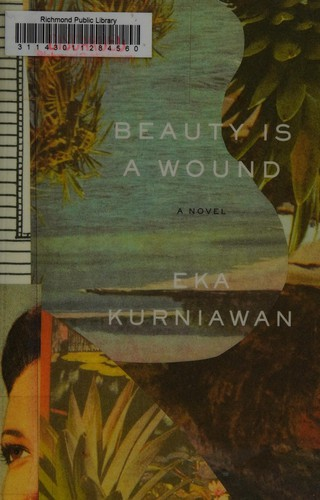
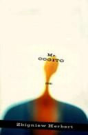
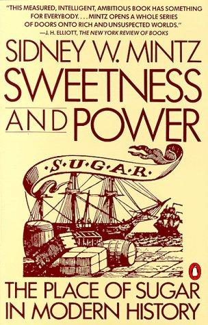
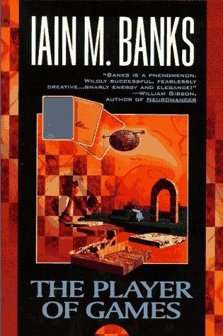
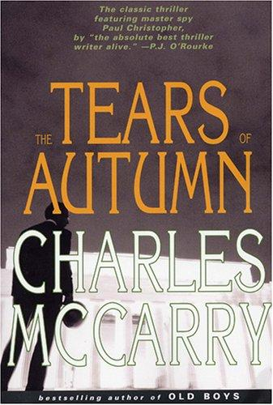
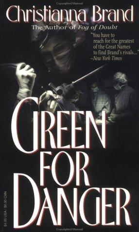

Recommendations for the week of 17 August 2026.
Three distinct growth edges this week, each one fresh. The translated non-Western literary shelf reaches Indonesia for the first time — a sprawling, ghost-crowded family epic that turns colonial and post-colonial violence into savage magical realism. The near-empty poetry shelf gains an austere sequence of Eastern European verse, philosophically serious about how to stay upright under a police state without telling consoling lies. And narrative nonfiction opens a genuinely new domain in economic anthropology, tracing how a single commodity — sugar — was manufactured by slavery and remade an entire civilisation's appetite. The comfort picks stay in the well-loved veins but reach for fresh authors: idea-dense Culture SF that critiques its own utopia through a board game, a cold and elegant spy novel from an underrated American master, and a Golden-Age hospital mystery whose whole pleasure is its clockwork.





